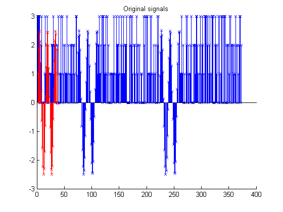
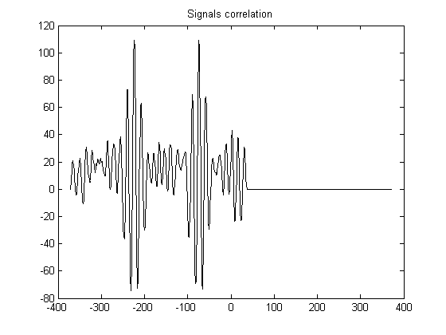
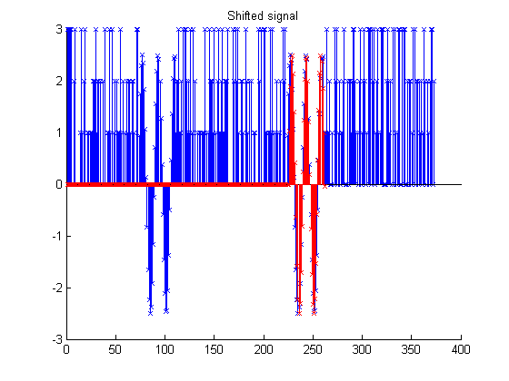

Contents
Creating noisy signal and looking for part of it
Experiment to see how find a part of singal inside another signal
close all; clear all; M = 4; sampletime = 50e-6; f = 1.23e3; t = [0:sampletime:37*sampletime]; sineWave = 2.5*sin(2*pi*f.*t); sampletimeB = 50e-6; fB = 1.2*f; tB = [0:sampletimeB:37*sampletimeB]; sineWaveB = 2.5*sin(2*pi*f.*tB); sampletime2 = 50e-6; f2 = 1.1*f;%3.73e3; t2 = [0:sampletime2:37*sampletime2]; sineWave2 = 2.5*sin(2*pi*f2.*t2); % figure % plot(sineWave) sig1 = randsrc(1,373, [0:M-1]); %sig2 = sig1(121:180); sig1(223:223+length(sineWave)-1) = sineWave; sig1(73:73+length(sineWaveB)-1) = sineWaveB; sig2 = sineWave2; figure; hold on; stem(sig1, '-x'); stem(sig2, 'r-x'); title('Original signals'); hold off;
Signal corellation, finding sample shift
figure; [sigCorr, lag] = xcorr(sig2,sig1); plot(lag, sigCorr, 'k'); title('Signals correlation'); % adding or removeing start samples shiftSig2 = ceil(length(lag)/2 - find(max(sigCorr) == sigCorr)) sig2 = [zeros(1, abs(shiftSig2)) sig2]; figure; hold on; stem(sig1, '-x'); stem(sig2, 'r-x'); title('Shifted signal') hold off;
shiftSig2 = 224 